Цветовая и кодовая маркировка транзисторов
При маркировке транзисторов, изготовленных в корпусах небольшого размераиспользуют цветовую (нанесение точек разнообразных цветов) и кодовую (символы). В виду отсутствия общего стандарта нередко встречаются транзисторы одной группы и типа, обозначения которых выполняется по-разному, либо же на различные транзисторы наносят одинаковые коды.
Абсолютное и урезанное обозначение транзисторов имеющих среднюю и малую мощность осуществляется с помощью цветных точек (двух или же четырех), или с помощью кодовых знаков в виде геометрических фигур (кодов). При полной маркировке на корпус полупроводника наносится тип, группа дата выпуска.
Цветовой код состоит из изображения геометрических фигур (треугольников, квадратов, прямоугольников и др.), цветных точек и латинских букв. Код наносится на плоских частях, крышке и других местах транзистора. По нему можно узнать тип транзистора, месяц и год изготовления.
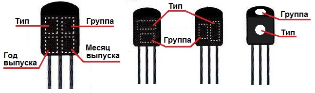
Рис. 1 - Места цветовой и кодовой маркировки маломощных среднечастотных и высокочастотных транзисторов в корпусе КТ-26 (ТО-92)
Таблица 1
| Тип транзистора | Группа | Месяц выпуска | Год выпуска | |||||
|---|---|---|---|---|---|---|---|---|
| Обозначение | Маркировка | Обозна-чение | Маркировка | Обозна-чение | Маркировка | Обозна-чение | Маркировка | |
| Код | Цветная точка | |||||||
| КТ203 | темно-красная | А | темно-красная | Январь | 1 | 1986 | U | |
| КТ208 | оранжевая | Б | желтая | Февраль | 2 | 1987 | V | |
| КТ209 | ♦◊ | серая | В | темно-зеленая | Март | 3 | 1988 | W |
| КТ313 | Г | голубая | Апрель | 4 | 1989 | X | ||
| КТ326 | коричневая | Д | синяя | Май | 5 | 1990 | A | |
| КТ337 | красная | Е | белая | Июнь | 6 | 1991 | B | |
| КТ339 | голубая | Ж | темно-коричневая | Июль | 7 | 1992 | C | |
| КТ342 | синяя | И | светло-табачная | Август | 8 | 1993 | D | |
| КТ345 | бежевая | К | серая | Сентябрь | 9 | 1994 | E | |
| КТ350 | сиреневая | Л | серебриcтая | Октябрь | O | 1995 | F | |
| КТ351 | темно-желтая | М | оранжевая | Ноябрь | N | 1996 | H | |
| КТ352 | зеленая | Декабрь | D | 1997 | I | |||
| КТ363 | розовая | 1998 | K | |||||
| КТ364 | 1999 | L | ||||||
| КТ502 | светло-желтая | 2000 | M | |||||
| КТ503 | белая | 2001 | N | |||||
| КТ3102 | темно-зеленая | |||||||
| КТ632 | серебристая | |||||||
| КТ638 | оранжевая | |||||||
| КТ680 | ||||||||
| КТ3157 | ||||||||
| КТ3166 | ||||||||
| КТ6127 | ||||||||
| КТ680 | ||||||||
| КТ681 | 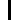 |
|||||||
| КТ698 | ||||||||
| КП103 | ||||||||
| КП364 | А | табачная | ||||||
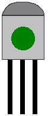 |
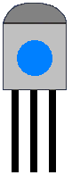 |
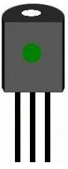 |
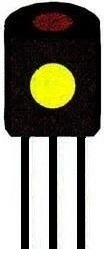 |
|||||
| КТ3126А | КТ361А3 | КТ3102 | КП364А | КТ342ВМ | КТ502А | КТ503Б | КТ503Д | КТ209Г |
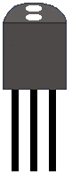 |
||||||||
| КТ3102ДМ | КП402А | КТ325АМ | ||||||
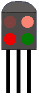 |
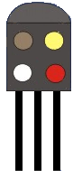 |
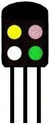 |
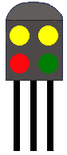 |
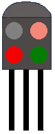 |
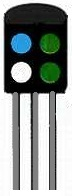 |
|||
| КТ326АМ | КТ326Б | КТ351А | КТ351Б | КТ350А | КТ349В | КТ3107Е | КТ3107И |
Рис. 2 - Цветовая маркировка некоторых маломощных транзисторов в корпусе ТО-92
Таблица 2
| Тип транзистора | Группы транзисторов | Месяц выпуска | Год выпуска | ||||
|---|---|---|---|---|---|---|---|
| Обозначение | Маркировка | Обозначение | Маркировка | Обозначение | Маркировка | Обозначение | Маркировка |
| янв. | бежевая | ||||||
| А | розовая | фев. | синяя | 1977 | бежевая | ||
| Б | желтая | март | зеленая | 1978 | cалатовая | ||
| В | синяя | апр. | красная | 1979 | оранжевая | ||
| Г | бежевая | май | cалатовая | 1980 | электрик | ||
| Д | оранжевая | июнь | серая | 1981 | бирюзовая | ||
| KT3107 | голубая | Е | электрик | июль | коричневая | 1982 | белая |
| Ж | салатовая | авг. | оранжевая | 1983 | красная | ||
| И | зеленая | сент. | электрик | 1984 | коричневая | ||
| К | красная | окт. | белая | 1985 | зеленая | ||
| Л | серая | ноябр. | желтая | 1986 | голубая | ||
| декабрь | голубая | ||||||
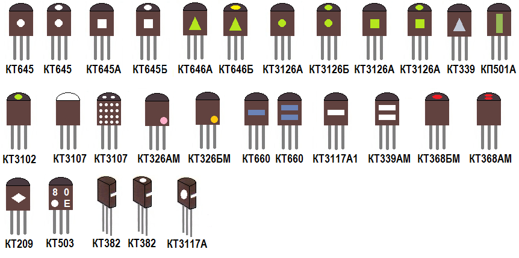
Рис. 3 - Примеры нестандартной маркировки транзисторов
Таблица 3
| Код | Тип | Код | Год выпуска | Код | Месяц выпуска | ||
|---|---|---|---|---|---|---|---|
| 4 | KT814 | и | 1986 | 1 | Январь | ||
| 5 | KT815 | V | 1987 | 2 | Февраль | ||
| 6 | КТ816 | W | 1988 | 3 | Март | ||
| 7 | KT817 | X | 1989 | 4 | Апрель | ||
| 8 | КТ683 | А | 1990 | 5 | Май | ||
| 9 | КТ9115 | В | 1991 | 6 | Июнь | ||
| 12 | КУ112 | С | 1992 | 7 | Июль | ||
| 40 | КТ940 | D | 1993 | 8 | Август | ||
| Е | 1994 | 9 | Сентябрь | ||||
| F | 1995 | 0 | Октябрь | ||||
| Н | 1996 | N | Ноябрь | ||||
| 1 | 1997 | D | Декабрь | ||||
| К | 1998 | - | |||||
| L | 1999 | - | |||||
| М | 2000 | - |
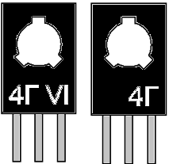 |
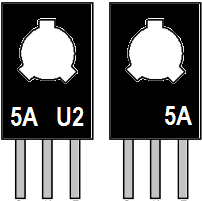 |
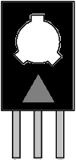 |
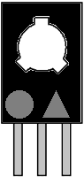 |
||
| КТ814Г | КТ815А | КТ646А | КТ646Б |
|---|
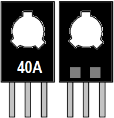 |
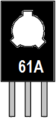 |
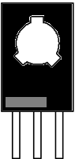 |
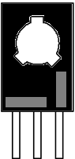 |
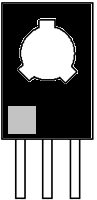 |
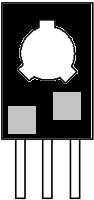 |
|
|---|---|---|---|---|---|---|
| КТ940 | КТ961А | КТ972А | КТ972Б | КТ973А | КТ973Б |
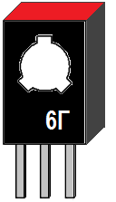 |
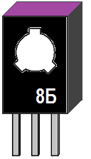 |
||||
|---|---|---|---|---|---|
| КТ816Г | КТ683Б |
Рис. 4 - Кодовая маркировка некоторых мощных транзисторов в корпусе КТ-27
Маркировка транзисторов в соответствии с европейской системой классификации.
В соответствии с европейской системой классификации обозначение транзистора состоит из двух букв и трех цифр (приборы общего применения) или трех букв и двух цифр(приборы специального применения).
- Первая буква характеризует материал, из которого сделан транзистор:
А-германий; В- кремний. - Вторая буква обозначает область применения прибора:
- С-маломощный низкочастотный прибор;
- D-мощный низкочастотный прибор;
- F- маломощный высокочастотный прибор;
- L-мощный высокочастотный прибор.
- Третья буква(если она есть) не несет особой смысловой нагрузки.
Например:
AF115 - транзистор общего назначения, германиевый, маломощный, высокочастотный.
BD135 - транзистор общего назначения, большой мощности, низкочастотный.
Маркировка транзисторов по системе JEDEC (США)
- Первый элемент - означает число PN - переходов: 2 - транзистор.
- Второй элемент - буква "N" (типономинал).
- Третий элемент - цифры (серийный номер).
- Четвертый элемент - буква, указывающая на возможные изменения параметров (характеристик) прибора в пределах одного типономинала по EIA.
Если корпус транзистора или другого полупроводникового прибора мал, то в сокращенной маркировке первая цифра и буква "N" - не ставятся.
Источники:
joyta.ru - Кодовая и цветовая маркировка транзисторов
diodnik.com - Кодовая и цветовая маркировка транзисторов
chipinfo.pro - Кодовая маркировка транзисторов в корпусе КТ-26 (ТО92)
hmelectro.ru - Цветовая и кодовая маркировка транзисторов TO-92